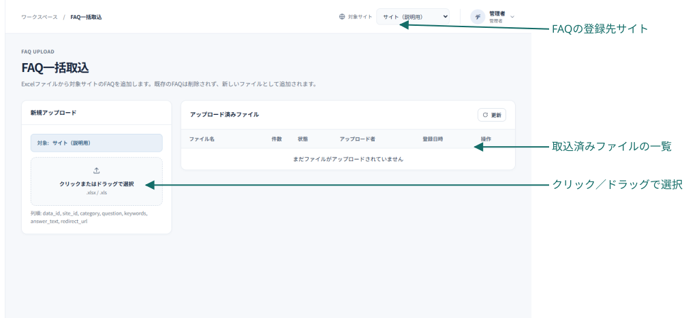

ファイルの準備
「 FAQ一括取込 」は、任意のExcel表から質問と回答を自動判別する機能ではありません。各行のFAQコード・質問・回答を指定の列に入力してください。
最初のシートだけを読み取ります。1行目は見出しとして読み飛ばし、2行目から取り込みます。見出し行を省くと、最初のデータ行は取り込まれません。
| 列 | 内容 | 入力ルール |
|---|---|---|
| A · data_id | サイト内でFAQを識別するコード。 | 必須。各行にコードを入力します。 |
| B · site_id | サイトのID。 | 選択中のサイトのIDを入力します。入力しない場合は、選択中のサイトを使用します。 |
| C · category | カテゴリ。 | 入力しなくても構いません。 |
| D · question | 質問。 | 必須。 |
| E · keywords | キーワード。 | 入力しなくても構いません。 |
| F · answer_text | 回答。 | 必須。 |
| G · redirect_url | 詳しい案内へのリンク。 | 入力しなくても構いません。 |
FAQの行の作成例
見出しの例： data_id | site_id | category | question | keywords | answer_text | redirect_url。次の表は列の配置例です。内容は、確認済みの実際の質問と回答に置き換えてください。
| A · FAQコード | B · サイトID | C · カテゴリ | D · 質問 | E · キーワード | F · 回答 | G · リンク |
|---|---|---|---|---|---|---|
| FAQ001 | 入力しない | インストール | インストール手順はどこで確認できますか？ | インストール,手順 | 確認済みの回答を入力してください。 | 入力しない |
「入力しない」は、そのセルに何も入力しないという意味です。この文言自体は入力しません。B列に入力しない場合は、選択中のサイトを使用します。カテゴリ・キーワード・リンクが不要でも列の位置はそのままにし、D列やF列を左へ詰めないでください。
Excelの列の配置が違う場合
| 条件 | 結果 |
|---|---|
| 「質問」と「回答」の2列だけ。 | D列・F列へ自動で割り当てられません。質問をD列、回答をF列へ移し、A列にFAQコードを追加してください。 |
| A列にFAQコードがない。 | 読込時に除外されます。スキップ行のプレビューにも表示されない場合があります。 |
| A列にスペースだけがある。 | 最初の読込を通過しても、スペースを除いたコードがないため、サーバー側でスキップされる場合があります。 |
| D列に質問、またはF列に回答がない。 | その行はスキップされ、FAQは作成されません。 |
| B列が選択中とは別のサイトID。 | その行はスキップされます。 |
| 見出し名は違うが、データの列の位置は正しい。 | 見出し名に関係なく、A列をコード、D列を質問、F列を回答として読み取ります。 |
| 列を並べ替えたが、A・D・Fには文字がある。 | 形式エラーにならず、内容を誤って読み取る場合があります。取込前に必ずプレビューを確認してください。 |
| 同じサイトに同じコードまたは質問のFAQがある。 | 重複行をスキップし、既存のFAQは上書きしません。 |
| 2枚目以降のシート、またはG列より後ろの内容。 | この画面でのFAQ作成には使用しません。 |
すべてのセルへの入力は必要ありませんが、列の位置は守ってください。C・E・G列を削除すると、後ろの列がずれる場合があります。
ファイルの選択とプレビュー
サイトを選択 → .xlsx / .xlsを選択 → 最初のシートを読込 → プレビューを表示。この時点ではDBに保存しません。

有効な行の取込
各行を確認 → …件を取り込む → 同期中… → 取込・スキップ件数を表示 → ファイル一覧を更新。

重複行はスキップします。エラー時はプレビューを残すので、再試行できます。
スキップされる行
コード・質問・回答がない行や、別サイトの行は取り込みません。サーバーでもコードと質問の重複を確認します。再取込で既存の回答を上書きすることはできません。
ファイルの承認・却下・再承認 — 管理者
操作 → 編集 → 承認する／却下する → 更新 → ファイル内の全FAQに適用。

スタッフが取込 → 承認待ち。管理者が承認 → 利用可能。却下 → データを残してFAQの編集をロック。キャンセル → 保存せず閉じる。
ファイルの削除：名前を確認 → ごみ箱 → 確認。ファイル内のFAQも削除されます。